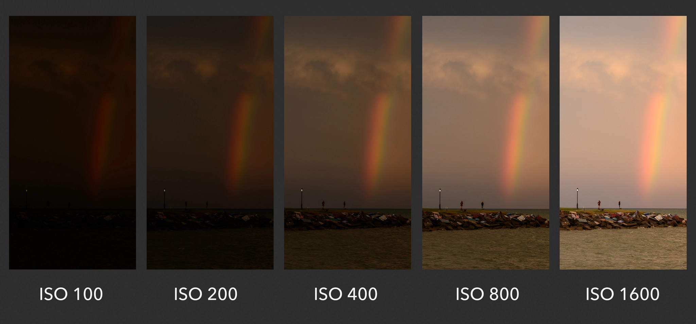
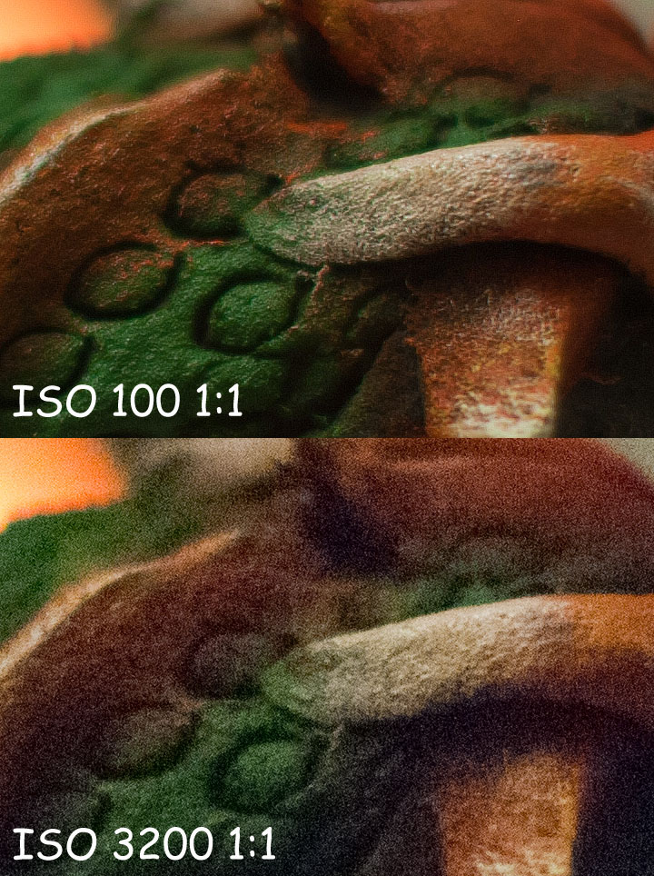

ISO
ISO — это параметр, указывающий на уровень чувствительности к свету ее свето-улавливающего элемента (матрицы или плёнки). Чем выше ISO, тем ярче будет изображение.
ISO влияет на шум
Фактически значение ISO также отвечает за появление шумов на фотографии. Шумы — это паразитическое искажение на фотографии. Обычно его так и называют — шум, зерно и т.д. Чем выше ISO тем большими будут шумы. И чем меньше ISO, тем меньшими будут шумы.
Золотое правило настройки ISO
Всегда помните про золотое правило – снимать нужно на минимально возможных значения ISO. Как только появилась возможность понизить ISO – делайте это. Подымайте ISO только тогда, когда это нужно, например, когда выдержка при низком значении ISO оказывается слишком длинной для нормальной съемки с рук.